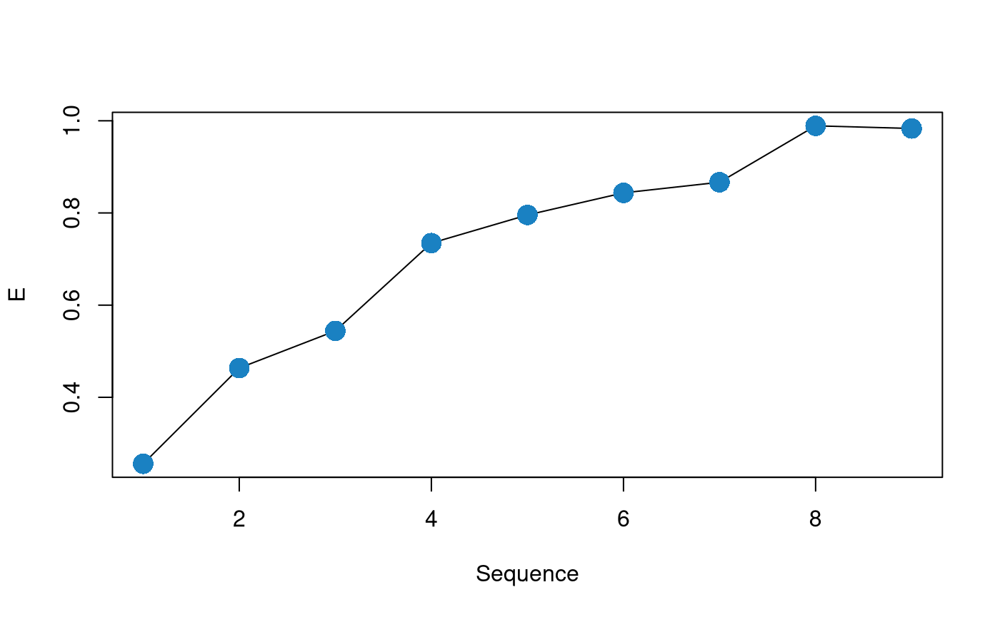
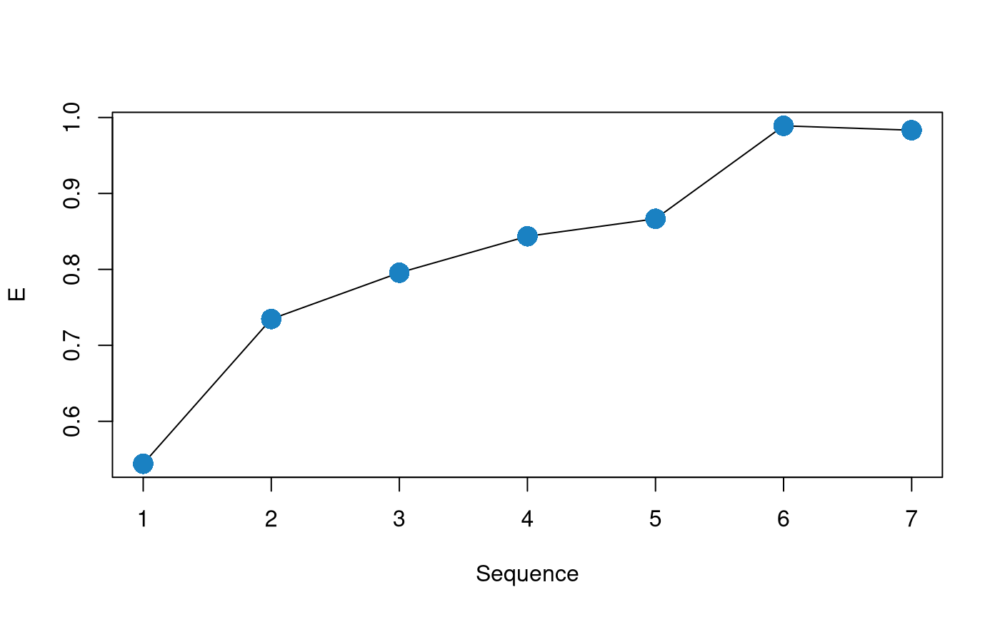
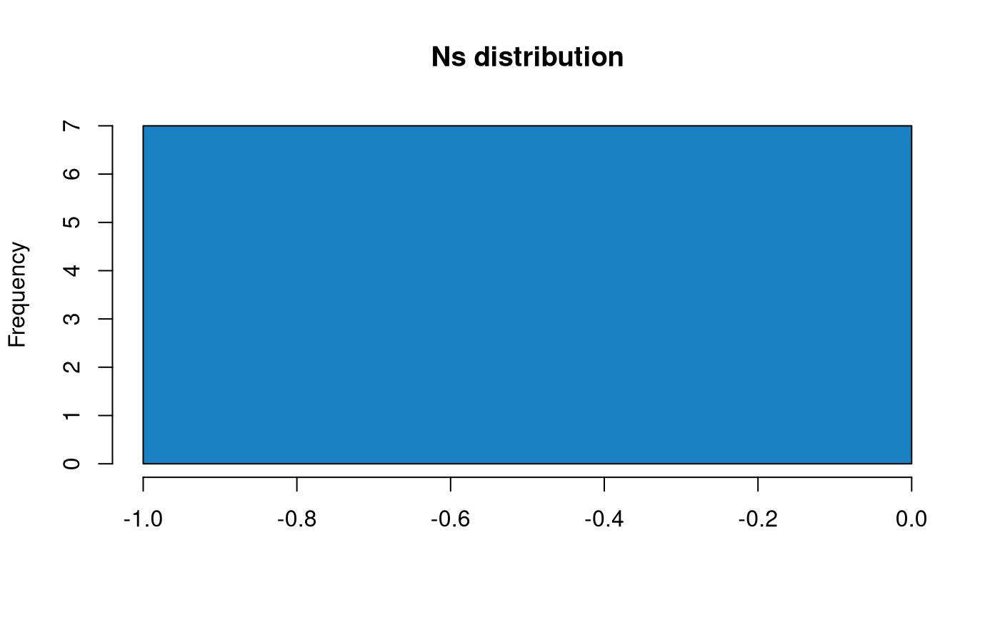
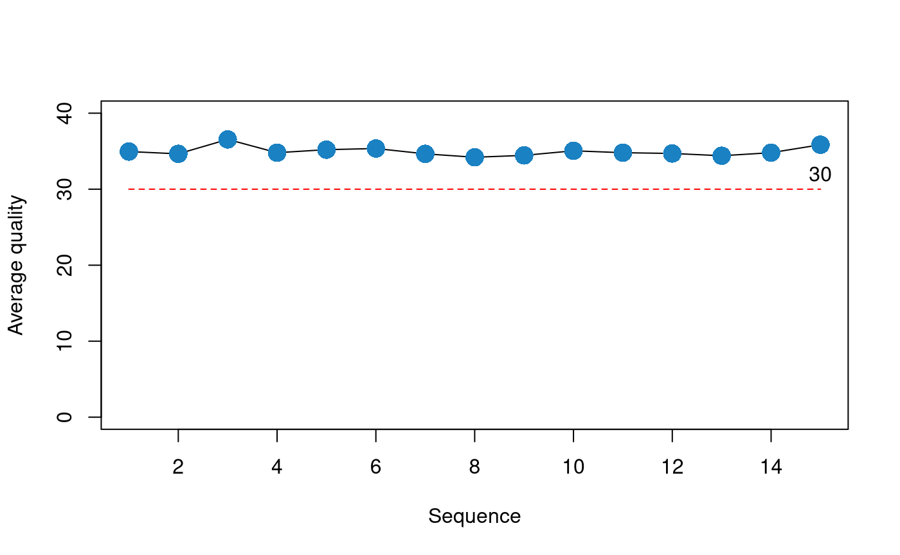

Main functions
- adapter_filter
Based on the Biostrings trimLRPatterns functions. It can remove adapters and partial adapters from the 3’ and 5’ sequence ends. Adapters can be anchored or not. When indels are allowed, the method is based on the “edit distance” of the sequences.
# create sequences
set.seed(10)
# nota that the use of set.seed before the call to the
# random generators allows reproducibility of the
# examples
input <- random_seq(6, 43)
input## A DNAStringSet instance of length 6
## width seq
## [1] 43 TGGTCCGGTGTTCTGGCGGAATAGGTACAGTCCAGTAATTGCC
## [2] 43 TCCCGCAGACGCTGGGTCCGGAATGCCCTTTCTGAGCAGCTCC
## [3] 43 AGCCGTTTGACTTCGCGGAAAGTGAACTTAGATTCGGTCCTGA
## [4] 43 AACACGGTACTTCCACAGTCAACCCGCCGACTTGGAGAATTTA
## [5] 43 TTAGCCGGGCGGTTATTCCCCTAGTGATCTTACTAAGATTTGC
## [6] 43 AATACCTAAGCGAAGTGACAGATATGTTCGTCATTCATCCAGG# create qualities of width 50
set.seed(10)
input_q <- random_qual(c(30,40), slength = 6, swidth = 50,
encod = "Sanger")
# create names
input_names <- seq_names(length(input))
### FULL ADAPTER IN 3'
adapter <- "ATCGACT"
# Create sequences with adapter
my_seqs <- paste0(input, adapter)
my_seqs <- DNAStringSet(my_seqs)
my_seqs## A DNAStringSet instance of length 6
## width seq
## [1] 50 TGGTCCGGTGTTCTGGCGGAATAGGTACAGTCCAGTAATTGCCATCGACT
## [2] 50 TCCCGCAGACGCTGGGTCCGGAATGCCCTTTCTGAGCAGCTCCATCGACT
## [3] 50 AGCCGTTTGACTTCGCGGAAAGTGAACTTAGATTCGGTCCTGAATCGACT
## [4] 50 AACACGGTACTTCCACAGTCAACCCGCCGACTTGGAGAATTTAATCGACT
## [5] 50 TTAGCCGGGCGGTTATTCCCCTAGTGATCTTACTAAGATTTGCATCGACT
## [6] 50 AATACCTAAGCGAAGTGACAGATATGTTCGTCATTCATCCAGGATCGACT# create ShortReadQ object
my_read <- ShortReadQ(sread = my_seqs, quality = input_q, id = input_names)
# trim adapter
filtered <- adapter_filter(my_read, Lpattern = adapter)
sread(filtered)## A DNAStringSet instance of length 6
## width seq
## [1] 50 TGGTCCGGTGTTCTGGCGGAATAGGTACAGTCCAGTAATTGCCATCGACT
## [2] 50 TCCCGCAGACGCTGGGTCCGGAATGCCCTTTCTGAGCAGCTCCATCGACT
## [3] 50 AGCCGTTTGACTTCGCGGAAAGTGAACTTAGATTCGGTCCTGAATCGACT
## [4] 50 AACACGGTACTTCCACAGTCAACCCGCCGACTTGGAGAATTTAATCGACT
## [5] 50 TTAGCCGGGCGGTTATTCCCCTAGTGATCTTACTAAGATTTGCATCGACT
## [6] 50 AATACCTAAGCGAAGTGACAGATATGTTCGTCATTCATCCAGGATCGACT### PARTIAL ADAPTER IN 5'
adapter <- "ATCGACT"
subadapter <- subseq(adapter, 1, 4)
# Create sequences with adapter
my_seqs <- paste0(input, subadapter)
my_seqs <- DNAStringSet(my_seqs)
my_seqs## A DNAStringSet instance of length 6
## width seq
## [1] 47 TGGTCCGGTGTTCTGGCGGAATAGGTACAGTCCAGTAATTGCCATCG
## [2] 47 TCCCGCAGACGCTGGGTCCGGAATGCCCTTTCTGAGCAGCTCCATCG
## [3] 47 AGCCGTTTGACTTCGCGGAAAGTGAACTTAGATTCGGTCCTGAATCG
## [4] 47 AACACGGTACTTCCACAGTCAACCCGCCGACTTGGAGAATTTAATCG
## [5] 47 TTAGCCGGGCGGTTATTCCCCTAGTGATCTTACTAAGATTTGCATCG
## [6] 47 AATACCTAAGCGAAGTGACAGATATGTTCGTCATTCATCCAGGATCG# create ShortReadQ object
my_read <- ShortReadQ(sread = my_seqs, quality = subseq(input_q, 1, 47),
id = input_names)
# trim adapter
filtered <- adapter_filter(my_read, Rpattern = adapter)
sread(filtered)## A DNAStringSet instance of length 6
## width seq
## [1] 43 TGGTCCGGTGTTCTGGCGGAATAGGTACAGTCCAGTAATTGCC
## [2] 43 TCCCGCAGACGCTGGGTCCGGAATGCCCTTTCTGAGCAGCTCC
## [3] 43 AGCCGTTTGACTTCGCGGAAAGTGAACTTAGATTCGGTCCTGA
## [4] 43 AACACGGTACTTCCACAGTCAACCCGCCGACTTGGAGAATTTA
## [5] 43 TTAGCCGGGCGGTTATTCCCCTAGTGATCTTACTAAGATTTGC
## [6] 43 AATACCTAAGCGAAGTGACAGATATGTTCGTCATTCATCCAGG
- complex_filter
Removes low complexity sequences, computing the entropy with the dinucleotide frequency: \[H_i = -\sum d_i * log_2(d_i)\]
where: \(d_i = D_i/ \sum_i^n D_i\) represents the frequency of dinucleotides of the sequence \(i\) relative to the frequency in the whole pool of sequences.
The relation \(H_i/H_r\) between \(H_i\) and a reference entropy value \(H_r\) is computed, and the obtained relations are compared with a given complexity threshold. By default the program uses a reference entropy of 3.908, that corresponds to the entropy of the human genome in bits, and a complexity threshold of 0.5.
# create sequences of different width
set.seed(10)
input <- lapply(c(0, 6, 10, 16, 20, 26, 30, 36, 40),
function(x) random_seq(1, x))
# create repetitive "CG" sequences with length adequante
# for a total length input + CG = 40
CG <- lapply(c(20, 17, 15, 12, 10, 7, 5, 2, 0),
function(x) paste(rep("CG", x), collapse = ""))
# concatenate input and CG
input <- mapply("paste", input, CG, sep = "")
input <- DNAStringSet(input)
input## A DNAStringSet instance of length 9
## width seq
## [1] 40 CGCGCGCGCGCGCGCGCGCGCGCGCGCGCGCGCGCGCGCG
## [2] 40 TGGTCCCGCGCGCGCGCGCGCGCGCGCGCGCGCGCGCGCG
## [3] 40 GGTGTTCTGGCGCGCGCGCGCGCGCGCGCGCGCGCGCGCG
## [4] 40 CGGAATAGGTACAGTCCGCGCGCGCGCGCGCGCGCGCGCG
## [5] 40 CAGTAATTGCCTCCCGCAGACGCGCGCGCGCGCGCGCGCG
## [6] 40 CGCTGGGTCCGGAATGCCCTTTCTGACGCGCGCGCGCGCG
## [7] 40 GCAGCTCCAGCCGTTTGACTTCGCGGAAAGCGCGCGCGCG
## [8] 40 TGAACTTAGATTCGGTCCTGAAACACGGTACTTCCACGCG
## [9] 40 CAGTCAACCCGCCGACTTGGAGAATTTATTAGCCGGGCGG# plot relative entropy (E, Shannon 1948)
H_plot <- function(x, H_max = 3.908135) {
freq <- dinucleotideFrequency(x)
freq <- freq /rowSums(freq)
H <- -rowSums(freq * log2(freq), na.rm = TRUE)
plot(H/H_max, type="l", xlab = "Sequence", ylab= "E")
points(H/H_max, col = "#1a81c2", pch = 16, cex = 2)
}
H_plot(input)
Figure 13: Relative entropy plot for the sequences before the operation
# create qualities of widths 40
set.seed(10)
input_q <- random_qual(c(30,40), slength = 9, swidth = 40,
encod = "Sanger")
# create names
input_names <- seq_names(9)
# create ShortReadQ object
my_read <- ShortReadQ(sread = input, quality = input_q, id = input_names)
# apply the filter,
filtered <- complex_filter(my_read)
sread(filtered)## A DNAStringSet instance of length 7
## width seq
## [1] 40 GGTGTTCTGGCGCGCGCGCGCGCGCGCGCGCGCGCGCGCG
## [2] 40 CGGAATAGGTACAGTCCGCGCGCGCGCGCGCGCGCGCGCG
## [3] 40 CAGTAATTGCCTCCCGCAGACGCGCGCGCGCGCGCGCGCG
## [4] 40 CGCTGGGTCCGGAATGCCCTTTCTGACGCGCGCGCGCGCG
## [5] 40 GCAGCTCCAGCCGTTTGACTTCGCGGAAAGCGCGCGCGCG
## [6] 40 TGAACTTAGATTCGGTCCTGAAACACGGTACTTCCACGCG
## [7] 40 CAGTCAACCCGCCGACTTGGAGAATTTATTAGCCGGGCGGH_plot(sread(filtered))Figure 14: Relative entropy plot for the sequences after the operation
- fixed_filter
Removes the specified number of bases from 3’ or 5’.
# create sequences, qualities and names of width 20
set.seed(10)
input <- random_seq(6, 20)
input## A DNAStringSet instance of length 6
## width seq
## [1] 20 TGGTCCGGTGTTCTGGCGGA
## [2] 20 ATAGGTACAGTCCAGTAATT
## [3] 20 GCCTCCCGCAGACGCTGGGT
## [4] 20 CCGGAATGCCCTTTCTGAGC
## [5] 20 AGCTCCAGCCGTTTGACTTC
## [6] 20 GCGGAAAGTGAACTTAGATTset.seed(10)
input_q <- random_qual(c(30,40), slength = 6, swidth = 20,
encod = "Sanger")
input_names <- seq_names(6)
# create ShortReadQ object
my_read <- ShortReadQ(sread = input, quality = input_q, id = input_names)
# apply the filter
filtered3 <- fixed_filter(my_read, trim5 = 5)
sread(filtered3)## A DNAStringSet instance of length 6
## width seq
## [1] 15 TGGTCCGGTGTTCTG
## [2] 15 ATAGGTACAGTCCAG
## [3] 15 GCCTCCCGCAGACGC
## [4] 15 CCGGAATGCCCTTTC
## [5] 15 AGCTCCAGCCGTTTG
## [6] 15 GCGGAAAGTGAACTTfiltered5 <- fixed_filter(my_read, trim3 = 5)
sread(filtered5)## A DNAStringSet instance of length 6
## width seq
## [1] 15 CGGTGTTCTGGCGGA
## [2] 15 TACAGTCCAGTAATT
## [3] 15 CCGCAGACGCTGGGT
## [4] 15 ATGCCCTTTCTGAGC
## [5] 15 CAGCCGTTTGACTTC
## [6] 15 AAGTGAACTTAGATTfiltered3and5 <- fixed_filter(my_read, trim3 = 10, trim5 = 5)
sread(filtered3and5)## A DNAStringSet instance of length 6
## width seq
## [1] 5 TTCTG
## [2] 5 TCCAG
## [3] 5 GACGC
## [4] 5 CTTTC
## [5] 5 GTTTG
## [6] 5 AACTT
- length_filter
Removes sequences with a length lower than minimum threshold value or/and higher than a maximum threshold value.
# create ShortReadQ object width widths between 1 and 60
set.seed(10)
input <- random_length(10, widths = 1:60)
sread(input)## A DNAStringSet instance of length 10
## width seq
## [1] 43 TCTGGCGGAATAGGTACAGTCCAGTAATTGCCTCCCGCAGACG
## [2] 9 CTGGGTCCG
## [3] 10 GAATGCCCTT
## [4] 48 TCTGAGCAGCTCCAGCCGTTTGACTTCGCGGAAAGTGAACTTAGATTC
## [5] 12 GGTCCTGAAACA
## [6] 55 CGGTACTTCCACAGTCAACCCGCCGACTTGGAGAATTTATTAGCCGGGCGGTTAT
## [7] 8 TCCCCTAG
## [8] 54 TGATCTTACTAAGATTTGCAATACCTAAGCGAAGTGACAGATATGTTCGTCATT
## [9] 39 CATCCAGGCAAGTGCGCGGACATCAATTACCACACAATT
## [10] 19 AAATATGACTCGCGTATCG# apply the filter, removing sequences with length < 5 or length> 30
filtered <- length_filter(input, rm.min = 5, rm.max = 30)
sread(filtered)## A DNAStringSet instance of length 5
## width seq
## [1] 9 CTGGGTCCG
## [2] 10 GAATGCCCTT
## [3] 12 GGTCCTGAAACA
## [4] 8 TCCCCTAG
## [5] 19 AAATATGACTCGCGTATCG
- n_filter
Wrapper of the ShortRead nFilter function. Removes all those sequences with a number of N’s > a given threshold.
# create 10 sequences of width 20
set.seed(10)
input <- random_seq(10, 20)
input## A DNAStringSet instance of length 10
## width seq
## [1] 20 TGGTCCGGTGTTCTGGCGGA
## [2] 20 ATAGGTACAGTCCAGTAATT
## [3] 20 GCCTCCCGCAGACGCTGGGT
## [4] 20 CCGGAATGCCCTTTCTGAGC
## [5] 20 AGCTCCAGCCGTTTGACTTC
## [6] 20 GCGGAAAGTGAACTTAGATT
## [7] 20 CGGTCCTGAAACACGGTACT
## [8] 20 TCCACAGTCAACCCGCCGAC
## [9] 20 TTGGAGAATTTATTAGCCGG
## [10] 20 GCGGTTATTCCCCTAGTGAT# inject N's
set.seed(10)
input <- inject_letter_random(input, how_many_seqs = 1:5,
how_many = 1:10)
input## A DNAStringSet instance of length 10
## width seq
## [1] 20 TGGTCCGGTGTTCTGGCGGA
## [2] 20 ATAGGTACAGTCCAGTAATT
## [3] 20 GCCTCCCGCAGACGCTGGGT
## [4] 20 CCGGAATGCCCTTTCTGAGC
## [5] 20 AGCTCCAGCCGTTTGACTTC
## [6] 20 GCGGAAAGTGAACTTAGATT
## [7] 20 CNGTCNNNAANCNNNNTACN
## [8] 20 NCCANANTCAACNCGCCNAC
## [9] 20 TTGGAGNATNTATTNGCNNN
## [10] 20 GCGGTTATTCCCCTAGTGAT#'
hist(letterFrequency(input, "N"), breaks = 0:10,
main = "Ns Frequency", xlab = "# Ns",
col = "#1a81c2") Figure 15: N’s histogram for the sequences before the filtering operation
Figure 15: N’s histogram for the sequences before the filtering operation
# Create qualities, names and ShortReadQ object
set.seed(10)
input_q <- random_qual(10, 20)
input_names <- seq_names(10)
my_read <- ShortReadQ(sread = input, quality = input_q, id = input_names)
# Apply the filter
filtered <- n_filter(my_read, rm.N = 3)
sread(filtered)## A DNAStringSet instance of length 7
## width seq
## [1] 20 TGGTCCGGTGTTCTGGCGGA
## [2] 20 ATAGGTACAGTCCAGTAATT
## [3] 20 GCCTCCCGCAGACGCTGGGT
## [4] 20 CCGGAATGCCCTTTCTGAGC
## [5] 20 AGCTCCAGCCGTTTGACTTC
## [6] 20 GCGGAAAGTGAACTTAGATT
## [7] 20 GCGGTTATTCCCCTAGTGAThist(letterFrequency(sread(filtered), "N"),
main = "Ns distribution", xlab = "",
col = "#1a81c2")
Figure 16: N’s histogram for the sequences after the filtering operation
- qmean_filter
Removes those sequences with quality < a give threshold.
# create 30 sequences of width 20, 15 with low quality and 15 with high quality
set.seed(10)
input <- random_seq(30, 20)
set.seed(10)
my_qual_H <- random_qual(c(30,40), slength = 15, swidth = 20,
encod = "Sanger")
set.seed(10)
my_qual_L <- random_qual(c(5,30), slength = 15, swidth = 20,
encod = "Sanger")
input_q<- c(my_qual_H, my_qual_L)
input_names <- seq_names(30)
my_read <- ShortReadQ(sread = input, quality = input_q, id = input_names)
# Plot of average qualities
qual_plot <- function(x, cutoff) {
q <- alphabetScore(x) / width(x)
plot(q, type="l", xlab = "Sequence", ylab= "Average quality", ylim = c(0, 40))
points(q, col = "#1a81c2", pch = 16, cex = 2)
lines(seq_along(q), rep(cutoff, length(q)), type="l", col = "red", lty=2)
text(length(q), cutoff+2, cutoff)
}
#' Average qualities before
qual_plot(my_read, cutoff = 30)
Figure 17: Average qualities before the filtering operation
# Apply the filter
filtered <- qmean_filter(my_read, minq = 30)
# Average qualities after
qual_plot(filtered, cutoff = 30)Figure 18: Average qualities after the filtering operation
- seq_filter
Removes sequences that match those passed as argument.
# Generate random sequences
set.seed(10)
input <- random_length(30, 3:7)
# Remove sequences that contain the following patterns:
rm.seq = c("TGGTC", "CGGT", "GTTCT", "ATA")
match_before <- unlist(lapply(rm.seq, function(x) grep(x,
as.character(sread(input)))))
match_before## [1] 14 17 27filtered <- seq_filter(input,rm.seq = rm.seq)
# Verify that matching sequences were removed
match_after <- unlist(lapply(rm.seq, function(x) {
grep(x, as.character(sread(filtered)))}))
match_after## [1] 14 26
- trim3q_filter
Removes from the 3’ ends in-tandem nucleotides with a quality < a threshold value.
# Create 6 sequences of width 20
set.seed(10)
input <- random_seq(6, 20)
input## A DNAStringSet instance of length 6
## width seq
## [1] 20 TGGTCCGGTGTTCTGGCGGA
## [2] 20 ATAGGTACAGTCCAGTAATT
## [3] 20 GCCTCCCGCAGACGCTGGGT
## [4] 20 CCGGAATGCCCTTTCTGAGC
## [5] 20 AGCTCCAGCCGTTTGACTTC
## [6] 20 GCGGAAAGTGAACTTAGATT# Create Phred+33 qualities of width 15 and paste to qualities of length
# 5 used for the tails.
# for three of the sequences, put low qualities in tails
set.seed(10)
my_qual <- random_qual(c(30,40), slength = 6, swidth = 15,
encod = "Sanger")
set.seed(10)
tails <- random_qual(c(30,40), slength = 6, swidth = 5,
encod = "Sanger")
# Low quality tails in sequences 2, 3 & 4
set.seed(10)
tails[2:4] <- random_qual(c(3, 20), slength = 3, swidth = 5,
encod = "Sanger")
my_qual <- paste0(my_qual, tails)
input_q <- BStringSet(my_qual)
input_q## A BStringSet instance of length 6
## width seq
## [1] 20 EGFEDIBEH@C@DD?EAAID
## [2] 20 I?EGDHIBEG?BHFG,%),4
## [3] 20 ACCFBBFCI?I@HBC402+,
## [4] 20 CGIAFGB@?AIDF@I14)2+
## [5] 20 IB@ACAAC?AGEDDHC?BEB
## [6] 20 BH?GFFHHG?DABECFEEDE# Watch qualities before filtering
as.matrix(PhredQuality(input_q))## [,1] [,2] [,3] [,4] [,5] [,6] [,7] [,8] [,9] [,10] [,11] [,12] [,13] [,14]
## [1,] 36 38 37 36 35 40 33 36 39 31 34 31 35 35
## [2,] 40 30 36 38 35 39 40 33 36 38 30 33 39 37
## [3,] 32 34 34 37 33 33 37 34 40 30 40 31 39 33
## [4,] 34 38 40 32 37 38 33 31 30 32 40 35 37 31
## [5,] 40 33 31 32 34 32 32 34 30 32 38 36 35 35
## [6,] 33 39 30 38 37 37 39 39 38 30 35 32 33 36
## [,15] [,16] [,17] [,18] [,19] [,20]
## [1,] 30 36 32 32 40 35
## [2,] 38 11 4 8 11 19
## [3,] 34 19 15 17 10 11
## [4,] 40 16 19 8 17 10
## [5,] 39 34 30 33 36 33
## [6,] 34 37 36 36 35 36# Create names and ShortReadQ object
input_names <- seq_names(6)
my_read <- ShortReadQ(sread = input, quality = input_q, id = input_names)
# Apply the filter
filtered <- trim3q_filter(my_read, rm.3qual = 28)
sread(filtered)## A DNAStringSet instance of length 6
## width seq
## [1] 20 TGGTCCGGTGTTCTGGCGGA
## [2] 15 ATAGGTACAGTCCAG
## [3] 15 GCCTCCCGCAGACGC
## [4] 15 CCGGAATGCCCTTTC
## [5] 20 AGCTCCAGCCGTTTGACTTC
## [6] 20 GCGGAAAGTGAACTTAGATT
- unique_filter
Wrapper of the ShortRead occurrenceFilter function. that removes duplicated sequences.
# Create duplicated sequences
s <- random_seq(10, 10)
s <- sample(s, 30, replace = TRUE)
# Create a ShortReadQ object
q <- random_qual(30, 10)
n <- seq_names(30)
my_read <- ShortReadQ(sread = s, quality = q, id = n)
# Check presence of duplicates
isUnique(as.character(sread(my_read)))## [1] FALSE FALSE FALSE FALSE FALSE FALSE FALSE FALSE FALSE FALSE FALSE FALSE
## [13] FALSE FALSE FALSE FALSE FALSE FALSE FALSE FALSE FALSE FALSE FALSE FALSE
## [25] FALSE FALSE FALSE FALSE FALSE TRUE# Apply the filter
filtered <- unique_filter(my_read)
isUnique(as.character(sread(filtered)))## [1] TRUE TRUE TRUE TRUE TRUE TRUE TRUE TRUE TRUE TRUE